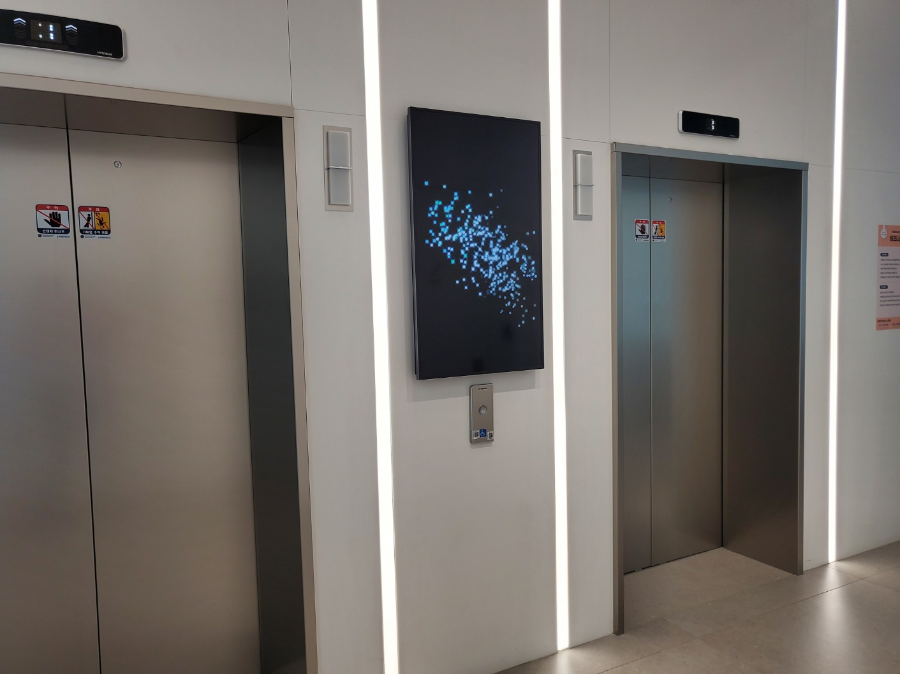
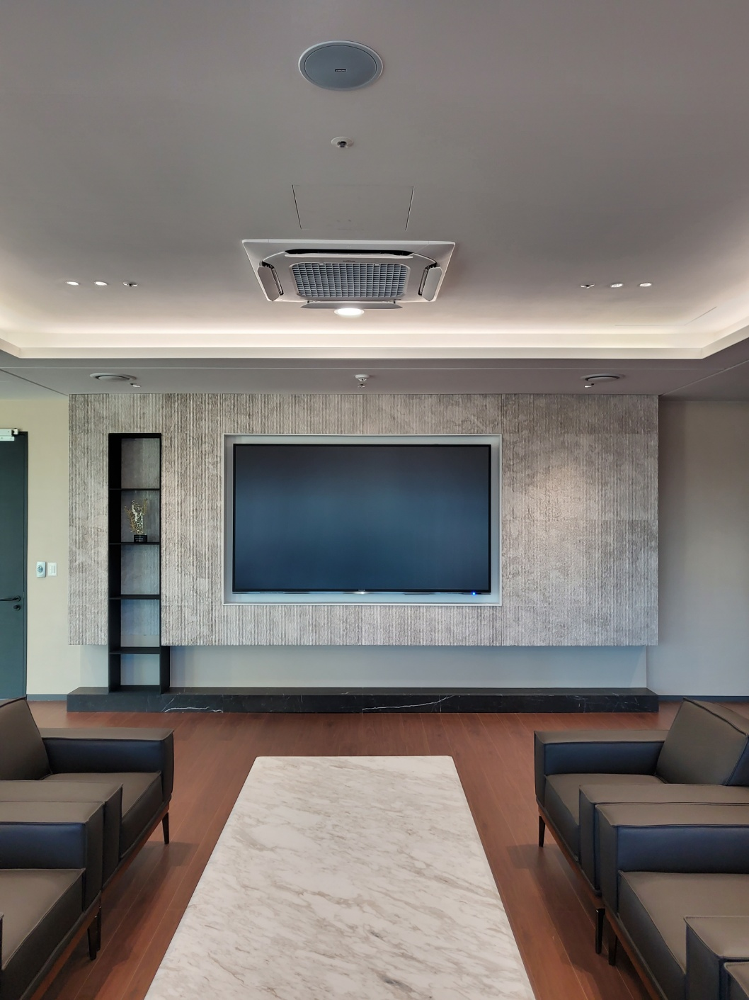
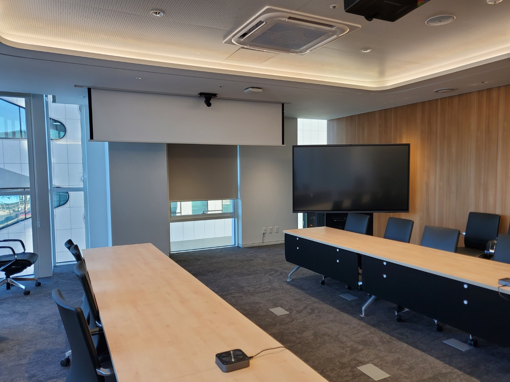
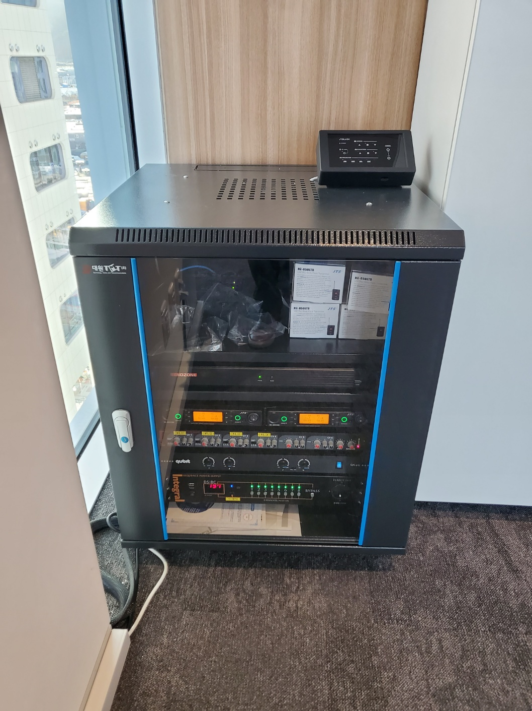

☰
회사소개
회사소개
회사연혁
오시는 길
LED Display
실내 LED Display
실외 LED Display
투명 LED Display
투명 OLED Display
Smart Office
스마트회의실
스마트강의실
스마트보드
시공사례
시공사례
고객센터
공지사항
상담문의
실내·실외 맞춤형 LED 디스플레이
탁월한 화질과 유연한 설치로 기업의 가치를 높입니다.

사이니지
판교 I사 ELV홀
자세히 보기 →

대형 LED디스플레이
판교 I사 임원실
자세히 보기 →

전자칠판 및 빔프로젝트
판교 I사 회의실
자세히 보기 →

빔프로젝트 음향장치
판교 I사 회의실
자세히 보기 →
📞
전화상담
카톡상담
📩
상담문의
📄
회사소개
📍
오시는 길
🌙
다크모드